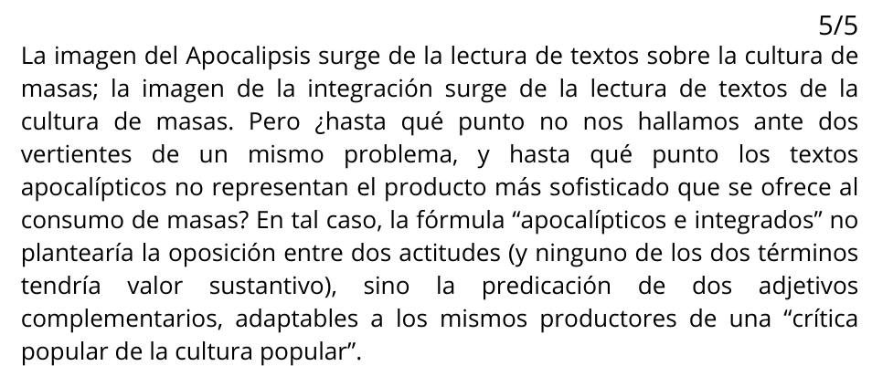
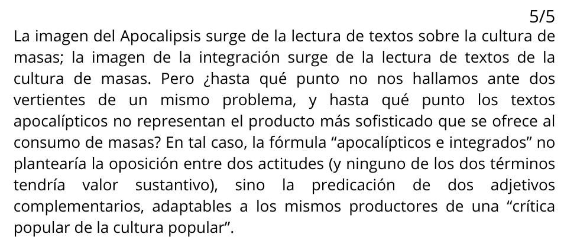

First Lecture...


Questions:
El conocimiento que se produce en la universidad es:
Señale la alternativa congruente con lo que se explica en el texto.
La función primordial de la universidad es:
El conocimiento que se produce en la universidad es:
Señale la alternativa congruente con lo que se explica en el texto.
La función primordial de la universidad es:


 

En última instancia, el autor propone una reflexión sobre:
Dado el contexto, el adjetivo INDEFENSO, empleado en el segundo párrafo, connota déficit...
Resulta incompatible con la sugerencia final del autor pretender que...
Se infiere del texto que si Heráclito retornara a nuestro tiempo,
Si el autor acertara en su hipótesis de que el discurso apocalíptico cobra sentido último en las masas que se constituyen en signo de nuestro tiempo, entonces


El sentido del adjetivo preferido es:
A las intuiciones acertadas y los errores de la frenología de Gall.
¿Cuál de los siguientes enunciados es incompatible con lo aseverado en el texto?
De acuerdo con la frenología de Gall, se infiere que habría proporcionalidad entre cerebro y mente, pues...
Si Gall hubiera rechazado la idea de la independencia de las funciones de cada órgano cerebral, entonces:


El texto se refiere principalmente...
Uno de los siguientes enunciados resulta incompatible con lo afirmado en el texto.
Del texto se infiere que, si queremos mejorar nuestra comprensión de la mente humana, entonces
Si los monos hubieran desarrollado una mayor capacidad para razonar que los humanos, entonces probablemente